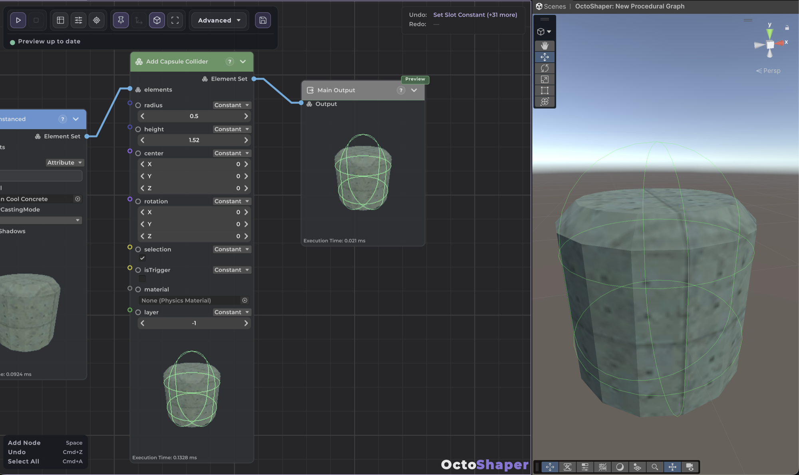

Procedural Meshes
OctoShaper 1.2 can build the geometry itself, not just place existing assets. Mesh nodes output ordinary ElementSets of points with faces attached, so everything you know about editing points still applies. When the shape is done, you realize it into a shared Unity mesh and draw it.
The mesh workflow in four steps
Mesh generators like Box Mesh, Cylinder Mesh or UV Sphere Mesh produce an ElementSet of logical points, one row per corner, with faces and corner UVs attached as topology. A box has 8 points, even though its rendered mesh needs extra vertices for hard edges and UV seams. OctoShaper creates those when you realize the mesh.
| Step | Nodes | Result |
|---|---|---|
| Generate | Box, Cylinder, UV Sphere, Plane, Convex Hull, Triangulate Points, Revolve Profile, Follow Spline | Points with faces |
| Edit | Any point node, Transform Mesh, Bevel Mesh, Boolean Meshes, Combine Mesh Definitions | Still points with faces |
| Realize | Realize Meshes | One placement row per shape, with a shared Unity mesh in mesh |
| Draw | Draw Instanced or Draw Instanced Indirect, Mesh: Attribute mesh |
Rendered surface |

Example: cylinders with a per-point radius
- Generate your placement points, then write a float attribute named
radius(for example with Set Random Float Attribute). - Connect the points to Cylinder Mesh, set Radius to Attribute and type
radius. Each input point becomes one cylinder. - Optionally add Bevel Mesh or move points with ordinary nodes. Mesh-level inputs bound to attributes must be constant within each generated shape; the source point's attributes are copied onto the shape's points for you.
- Add Realize Meshes, then Draw Instanced with Mesh set to Attribute
mesh, and assign a material.
Note: Before realization, previews show triangle outlines only. Only the output of an explicit draw node previews as a rendered surface.
Editing points and shapes
Because a mesh is just points with faces, any node that moves position deforms it: jitter, attract, displace by a texture, and so on. A few rules help:
- Filtering removes faces. Dropping a point also removes every face that used it.
- Rotation and scale stay spawn attributes. They don't deform vertices. Use Transform Mesh to rotate or scale the geometry itself.
- Merging keeps shapes separate. The Merge node keeps each definition on its own. Combine Mesh Definitions joins them into one without a boolean union.
- Booleans and bevels are careful. On collapsed or degenerate solids they leave the input unchanged (input A for booleans). Adjust the tolerance or fix the shape.
- Custom attributes and topology. Changing topology doesn't interpolate arbitrary custom attributes, and realization keeps only attributes that are the same across the whole shape.
Realizing and drawing
Realize Meshes consolidates each definition into one Unity mesh instance and outputs one placement row per shape, with the mesh in the mesh attribute. Identical definitions share their mesh, so if you need many copies of one shape, realize once and duplicate the placements.
Both draw nodes now have an explicit Mesh selector:
- Attribute
mesh: draw whatever each row carries. Use this for realized geometry. - Constant: draw one asset mesh on every row. An empty constant, or a missing material, skips drawing. It doesn't switch to attribute mode by itself.
Before realization you can also feed mesh points straight into prefab spawning nodes. Use Discard Mesh Topology when a branch should spawn objects without also carrying the mesh definition along.
Reusing a mesh on other points
To stamp one custom shape onto a separate set of points:
- Connect Realize Meshes to Assign Mesh → Source, and your placement points to Elements. Leave the asset Mesh input empty.
- Source Row picks which realized shape to use (zero by default), or reads an integer attribute on the target points to vary it.
- Draw the result with Mesh set to Attribute
mesh.
Explode Meshes goes the other way: it turns existing readable Unity meshes into editable points and faces. Place Mesh On Points and the surface sampling nodes (Sample Mesh Surface, Sample Mesh Surface Grid) let you scatter on top of generated geometry.
Colliders
The Physics category has matching collider nodes for generated content: Add Box Collider, Add Sphere Collider, Add Capsule Collider and Add Mesh Collider. Several nodes can stack on the same rows to build compound colliders. Fit Box Collider To Mesh sizes a box to the mesh bounds, and Clear Colliders removes the list again.

Where things moved in 1.2
- The Geometry category (green) holds mesh generation and editing.
- The new Rendering category (blue) holds Draw Instanced, Draw Instanced Indirect, Assign Mesh and the prefab and primitive spawning nodes.
- Translate, Rotate, Jitter Positions, Jitter Rotation, Jitter Scale and Randomize Rotation moved from Mutators to Spatial.
- The experimental Draw Meshes node is gone. See Upgrading to 1.2.
Continue with Colors, textures and materials to paint what you built, or open the bundled samples to see complete mesh graphs.
Frequently asked questions
Why can't I see a surface after Box Mesh?
mesh and a material.